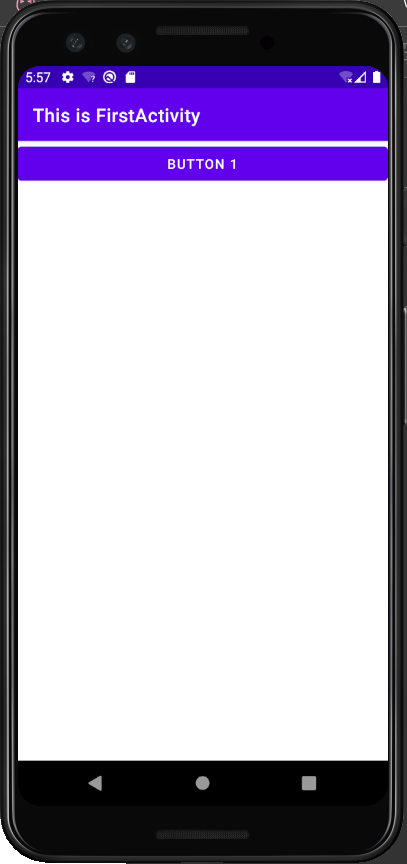
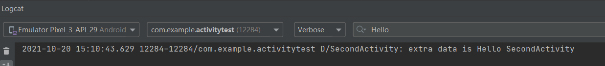
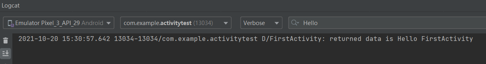
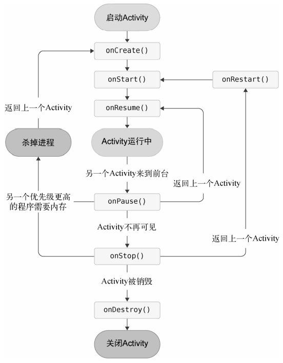

Android 开发——Activity
[TOC]
Activity 的基本用法
创建 Activity
新建一个 Android 项目，选择 “Add No Activity”，包名使用默认值 com.example.activitytest。
app/src/main/java/com.example.activitytest 目录是空的，右击 com.example.activitytest 包→New→Activity→Empty Activity，命名为 FirstActivity。Generate Layout File 表示会自动为 FirstActivity 创建一个对应的布局文件，Launcher Activity 表示会自动将 FirstActivity 设置为当前项目的主 Activity，暂时都不勾选。
创建和加载布局
右击 app/src/main/res 创建一个 layout 目录，然后对着 layout 目录右键→New→Layout resource file，将这个布局文件命名为 first_layout，根元素默认选择为 LinearLayout。
在 first_layout 中添加一个 Button 元素，并在 Button 元素内部增加几个属性。
1 |
|
android:id 是给当前元素定义一个唯一的标识符，@+id/id_name 表示在 XML 中定义一个 id，去掉 ’+‘ 号就是引用一个 id。android:layout_width 指定了当前元素的宽度，这里使用 match_parent 表示让当前元素和父元素一样宽。android:layout_height 指定了当前元素的高度，这里使用 wrap_content 表示当前元素的高度只要能刚好包含里面的内容就行。android:text 指定了元素中显示的文字内容。
一个简单的布局编写完成了，接下来在 Activity 中加载这个布局。
在 FirstActivity 的 onCreate() 方法中加入如下代码：
1 | class FirstActivity : AppCompatActivity() { |
这里调用了 setContentView() 方法来给当前的 Activity 加载一个布局，而在 setContentView() 方法中，一般会传入一个布局文件的 id。
在 AndroidManifest.xml 注册
所有的 Activity 都要在 AndroidManifest.xml 中进行注册才能生效。实际上 FirstActivity 已经在 AndroidManifest.xml 中注册过了，打开 app/src/main/AndroidManifest.xml 文件：
1 |
|
可以看到，Activity 的注册声明要放在 <application> 标签内，这里是通过 <activity> 标签来对 Activity 进行注册的。
接下来为程序配置主 Activity，对标签 <activity> 进行修改：
1 | <activity |
android:label 指定 Activity 中标题栏的内容，标题栏是显示在 Activity 最顶部的，还是启动器（Launcher）中应用程序显示的名称。
运行结果：

在 Activity 中使用 Toast
Toast 是 Android 系统提供的一种非常好的提醒方式，在程序中可以使用它将一些短小的信息通知给用户，这些信息会在一段时间后自动消失，并且不会占用任何屏幕空间。
首先需要定义一个弹出 Toast 的触发点，就让这个按钮的点击事件作为弹出Toast的触发点。
在 onCreate() 方法中添加如下代码
1 | override fun onCreate(savedInstanceState: Bundle?) { |
在 Activity 中，可以通过 findViewById() 方法获取在布局文件中定义的元素，这里我们传入 R.id.button1来得到按钮的实例。得到按钮的实例之后，通过调用 setOnClickListener() 方法为按钮注册一个监听器，点击按钮时就会执行监听器中的 onClick() 方法。 通过静态方法 makeText() 创建出一个 Toast 对象，然后调用 show() 将 Toast 显示出来就可以了。
makeText() 方法需要传入 3 个参数。第一个参数是 Context，也就是 Toast 要求的上下文，由于 Activity 本身就是一个 Context 对象，这里直接传入 this 即可；第二个参数是 Toast 显示的文本内容；第三个参数是 Toast 显示的时长，有两个内置常量可以选择：Toast.LENGTH_SHORT 和 Toast.LENGTH_LONG。
重新运行并点击按钮：
Kotlin 编写的 Android 项目在 app/build.gradle 文件的头部默认引入了一个 kotlin-android-extensions 插件，这个插件会根据布局文件中定义的控件 id 自动生成一个具有相同名称的变量，我们可以在 Activity 里直接使用 这个变量，而不用再调用 findViewById() 方法了。
在 Activity 中使用 Menu
首先在 res 目录下新建一个 menu 目录，接着在这个目录新建一个名叫 “main” 的菜单文件，右击 menu→New→Menu resource file。
1 | <menu xmlns:android="http://schemas.android.com/apk/res/android"> |
创建两个菜单项，其中标签 <item> 用来创建具体的某一个菜单项，然后通过 android:id 给这个菜单项指定一个唯一的标识符，通过 android:title 给这个菜单项指定一个名称。
回到 FirstActivity 中来重写 onCreateOptionsMenu() 方法，重写方法可以使用 Ctrl + O 快捷键。
1 | override fun onCreateOptionsMenu(menu: Menu?): Boolean { |
onCreateOptionsMenu() 方法中实际上调用了父类的 getMenuInflater() 方法。getMenuInflater() 方法能够得到一个 MenuInflater 对象，再调用它的 inflate() 方法，就可以给当前 Activity 创建菜单了。inflate() 方法接收两个参数：第一个参数用于指定我们通过哪一个资源文件来创建菜单，这里传入R.menu.main；第二个参数用于指定我们的菜单项将添加到哪一个 Menu 对象当中，这里直接使用 onCreateOptionsMenu() 方法中传入的 menu 参数。最后给这个方法返回 true，表示允许创建的菜单显示出来；如果返回了false，创建的菜单将无法显示。
定义菜单响应事件。在 FirstActivity 中重写 onOptionsItemSelected() 方法，如下所示：
1 | override fun onOptionsItemSelected(item: MenuItem): Boolean { |
右上角的三点就是菜单，内部有两个菜单项。

销毁一个 Activity
其实只要按一下 Back 键就可以销毁当前的 Activity，但也可以通过代码销毁，调用 finish() 方法。
修改按钮监听器中的代码，如下所示：
1 | button1.setOnClickListener { |
重新运行程序，这时点击一下按钮，当前的 Activity 就被成功销毁了，效果和按下 Back 键是一样的。
使用 Intent 切换 Activity
Intent 是 Android 程序中各组件之间进行交互的一种重要方式，它不仅可以指明当前组件想要执行的动作，还可以在不同组件之间传递数据。Intent 一般可用于启动 Activity、启动 Service 以及发送广播等场景。
Intent 大致可以分为两种：显式 Intent 和隐式 Intent。
显式 Intent
右击 com.example.activitytest 包→New→Activity→Empty Activity，会弹出一个创建 Activity 的对话框，这次命名为 SecondActivity，并勾选 Generate Layout File，给布局文件起名为 second_layout，但要勾选Launcher Activity 选项。
将 second_layout 里面的代码替换为：
1 | <LinearLayout xmlns:android="http://schemas.android.com/apk/res/android" |
还是定义了一个按钮，并在按钮上显示 Button 2。
Intent 有多个构造函数的重载，其中一个是 Intent(Context packageContext, Class cls)。这个构造函数接收两个参数：第一个参数 Context 要求提供一个启动 Activity 的上下文；第二个参数 Class 用于指定想要启动的目标 Activity。Activity 类中提供了一个 startActivity() 方法，专门用于启动 Activity，它接收一个 Intent 参数，这里我们将构建好的 Intent 传入 startActivity() 方法就可以启动目标 Activity 了。
修改 FirstActivity 中按钮的点击事件，代码如下所示：
1 | button1.setOnClickListener { |
首先构建了一个 Intent 对象，第一个参数传入 this 也就是 FirstActivity 作为上下文，第二个参数传入 SecondActivity::class.java 作为目标 Activity。
重新启动，点击 Button1 即可切换到页面 2。
隐式 Intent
相比于显式 Intent，隐式 Intent 则含蓄许多，它并不明确指出想要启动哪一个 Activity，而是指定一系列更为抽象的 action 和 category 等信息，然后由系统去分析这个 Intent，并帮我们找出合适的 Activity 去启动。
通过在 <activity> 标签下配置的内容，可以指定当前 Activity 能够响应的 action 和 category，打开 AndroidManifest.xml，添加如下代码：
1 | <activity |
只有 <action> 和 <category> 中的内容同时匹配 Intent 中指定的 action 和 category 时，这个 Activity 才能响应此 Intent。
修改 FirstActivity 中按钮的点击事件，代码如下所示：
1 | button1.setOnClickListener { |
使用 Intent 的另一个构造函数，直接将 action 的字符串传了进去，表明想要启动能够响应 com.example.activitytest.ACTION_START 这个 action 的 Activity。android.intent.category.DEFAULT 是一种默认的 category， 在调用 startActivity() 方法的时候会自动将这个 category 添加到 Intent 中。
每个 Intent 中只能指定一个 action，但能指定多个 category。
修改 FirstActivity 中按钮的点击事件，代码如下所示：
1 | button1.setOnClickListener { |
可以调用 Intent 中的 addCategory() 方法来添加一个 category，同时需要在 <intent-filter> 中添加该 category 的声明。
使用隐式 Intent 启动其他程序的 Activity
修改 FirstActivity 中按钮点击事件的代码，如下所示：
1 | button1.setOnClickListener { |
首先指定了 Intent 的 action 是 Intent.ACTION_VIEW，这是一个 Android 系统内置的动作，其常量值为 android.intent.action.VIEW。然后通过 Uri.parse() 方法将一个网址字符串解析成一个 Uri 对象，再调用 Intent 的 setData() 方法将这个 Uri 对象传递进去。
重新运行程序，在 FirstActivity 界面点击按钮就可以打开系统浏览器。
向下一个 Activity 传递数据
在启动 Activity 时传递数据的思路很简单，Intent 中提供了一系列 putExtra() 方法的重载，可以把我们想要传递的数据暂存在 Intent 中，在启动另一个 Activity 后，只需要把这些数据从 Intent 中取出就可以了。比如FirstActivity 中有一个字符串，现在想把这个字符串传递到 SecondActivity 中：
1 | button1.setOnClickListener { |
使用显式 Intent 的方式来启动 SecondActivity，并通过 putExtra() 方法传递一个字符串。这里 putExtra() 方法接收两个参数，第一个参数是键，用于之后从 Intent 中取值，第二个参数才是真正要传递的数据。
然后在 SecondActivity 中将传递的数据取出，并打印出来，代码如下所示：
1 | class SecondActivity : AppCompatActivity() { |
重新运行程序，在 FirstActivity 的界面点击一下按钮会跳转到 SecondActivity，查看 Logcat 打印信息：

返回数据给上一个 Activity
Activity 类中还有一个用于启动 Activity 的 startActivityForResult() 方法，但它期望在 Activity 销毁的时候能够返回一个结果给上一个 Activity。
startActivityForResult() 方法接收两个参数：第一个参数还是 Intent；第二个参数是请求码，用于在之后的回调中判断数据的来源。修改 FirstActivity 中按钮的点击事件，代码如下所示：
1 | button1.setOnClickListener { |
在 SecondActivity 中给按钮注册点击事件，并在点击事件中添加返回数据的逻辑，代码如下所示：
1 | class SecondActivity : AppCompatActivity() { |
我们还是构建了一个 Intent，只不过这个 Intent 仅仅用于传递数据，把要传递的数据存放在 Intent 中，然后调用 setResult() 方法。这个方法非常重要，专门用于向上一个 Activity 返回数据。setResult() 方法接收两个参数：第一个参数用于向上一个 Activity 返回处理结果，一般只使用 RESULT_OK 或 RESULT_CANCELED 这两个值；第二个参数则把带有数据的 Intent 传递回去。最后调用 finish() 方法来销毁当前 Activity。
由于使用 startActivityForResult() 方法来启动 SecondActivity，在 SecondActivity 被销毁后会回调上一个 Activity 的 onActivityResult() 方法，因此需要在 FirstActivity 中重写该方法来得到返回的数据，如下所示：
1 | override fun onActivityResult(requestCode: Int, resultCode: Int, data: Intent?) { |
onActivityResult() 方法带有 $3$ 个参数：第一个参数 requestCode，即在启动 Activity 时传入的请求码；第二个参数 resultCode，即在返回数据时传入的处理结果；第三个参数 data，即携带着返回数据的 Intent。由于在一个 Activity 中有可能调用 startActivityForResult() 方法去启动很多不同的 Activity，每一个 Activity 返回的数据都会回调到 onActivityResult() 这个方法中，因此首先要做的就是通过检查 requestCode 的值来判断数据来源；确定数据是从 SecondActivity 返回的之后，再通过 resultCode 的值来判断处理结果是否成功；最后从 data 中取值并打印出来，这样就完成了向上一个 Activity 返回数据的工作。
重新运行程序，在 FirstActivity 的界面点击按钮会打开 SecondActivity，然后在 SecondActivity 界面点击 Button 2 按钮会回到 FirstActivity，这时查看 Logcat 的打印信息：

如果用户在 SecondActivity 中并不是通过点击按钮，而是通过按下 Back 键回到 FirstActivity，我们可以通过在 SecondActivity 中重写 onBackPressed() 方法来向上一个 Activity 传递数据，代码如下所示：
1 | override fun onBackPressed() { |
Activity 的生命周期
返回栈
Android 是使用任务（task）来管理 Activity 的，一个任务就是一组存放在栈里的 Activity 的集合，这个栈也被称作返回栈（back stack）。
栈是一种后进先出的数据结构，在默认情况 下，每当我们启动了一个新的 Activity，它就会在返回栈中入栈，并处于栈顶的位置。而每当我们按下 Back 键或调用 finish() 方法去销毁一个 Activity 时，处于栈顶的 Activity 就会出栈，前一个入栈的 Activity 就会重新处于栈顶的位置。系统总是会显示处于栈顶的 Activity 给用户。
Activity 状态
每个 Activity 在其生命周期中最多可能会有 $4$ 种状态。
运行状态
当一个 Activity 位于返回栈的栈顶时，Activity 就处于运行状态。系统最不愿意回收的就是处于运行状态的 Activity，因为这会带来非常差的用户体验。
暂停状态
当一个 Activity 不再处于栈顶位置，但仍然可见时，Activity 就进入了暂停状态。可见指的是没有占满整个屏幕，比如对话框形式的 Activity 只会占用屏幕中间的部分区域。处于暂停状态的 Activity 仍然是完全存活着的，系统也不愿意回收这种 Activity（因为它还是可见的，回收可见的东西都会在用户体验方面有不好的影响），只有在内存极低的情况下，系统才会去考虑回收这种 Activity。
停止状态
当一个 Activity 不再处于栈顶位置，并且完全不可见的时候，就进入了停止状态。系统仍然会为这种 Activity 保存相应的状态和成员变量，但是这并不是完全可靠的，当其他地方需要内存时，处于停止状态的 Activity 有可能会被系统回收。
销毁状态
一个 Activity 从返回栈中移除后就变成了销毁状态。系统最倾向于回收处于这种状态的 Activity，以保证手机的内存充足。
Activity 的生存期
Activity 类中定义了 $7$ 个回调方法，覆盖了 Activity 生命周期的每一个环节。
- onCreate()。它会在 Activity 第一次被创建的时候调用。应该在这个方法中完成 Activity 的初始化操作，比如加载布局、绑定事件等。
- onStart()。这个方法在 Activity 由不可见变为可见的时候调用。
- onResume()。这个方法在 Activity 准备好和用户进行交互的时候调用。此时的 Activity 一 定位于返回栈的栈顶，并且处于运行状态。
- onPause()。这个方法在系统准备去启动或者恢复另一个 Activity 的时候调用。通常会在这个方法中将一些消耗 CPU 的资源释放掉，以及保存一些关键数据，但这个方法的执行速度一定要快，不然会影响到新的栈顶 Activity 的使用。
- onStop()。这个方法在 Activity 完全不可见的时候调用。它和 onPause() 方法的主要区别在于，如果启动的新 Activity 是一个对话框式的 Activity，那么 onPause() 方法会得到执行，而 onStop() 方法并不会执行。
- onDestroy()。这个方法在 Activity 被销毁之前调用，之后 Activity 的状态将变为销毁状态。
- onRestart()。这个方法在 Activity 由停止状态变为运行状态之前调用，也就是 Activity 被重新启动了。
可以将 Activity 分为以下 $3$ 种生存期：
- 完整生存期。Activity 在 onCreate() 方法和 onDestroy() 方法之间所经历的就是完整生存期。一般情况下，一个 Activity 会在 onCreate() 方法中完成各种初始化操作，而在 onDestroy() 方法中完成释放内存的操作。
- 可见生存期。Activity 在 onStart() 方法和 onStop() 方法之间所经历的就是可见生存期。在可见生存期内， Activity 对于用户总是可见的，即便有可能无法和用户进行交互。我们可以通过这两个方法合理地管理那些对用户可见的资源。比如在 onStart() 方法中对资源进行加载，而在 onStop() 方法中对资源进行释放，从而保证处于停止状态的 Activity 不会占用过多内存。
- 前台生存期。Activity 在 onResume() 方法和 onPause() 方法之间所经历的就是前台生存期。在前台生存期内，Activity 总是处于运行状态，此时的 Activity 是可以和用户进行交互的，我们平时看到和接触最多的就是这个状态下的 Activity。
Android 官方提供了一张 Activity 生命周期的示意图：

Activity 被回收了怎么办
假设应用中有一个 Activity A，用户在 Activity A 的基础上启动了 Activity B，Activity A 就进入了 停止状态，这个时候由于系统内存不足，将 Activity A 回收掉了，然后用户按下 Back 键返回 Activity A，会出现什么情况呢？其实还是会正常显示 Activity A 的，只不过这时并不会执行 onRestart() 方法，而是会执行 Activity A 的 onCreate() 方法，因为 Activity A 在这种情况下会被重新创建一次。
但是有一个问题，Activity A 中是可能存在临时数据和状态的，所以要想办法保存一些重要信息。Activity 中提供了一个 onSaveInstanceState() 回调方法，这个方法可以保证在 Activity 被回收之前一定会被调用。
onSaveInstanceState() 方法会携带一个 Bundle 类型的参数，Bundle 提供了一系列的方法用于保存数据，比如可以使用 putString() 方法保存字符串，使用 putInt() 方法保存整型数据，以此类推。每个保存方法需要传入两个参数，第一个参数是键，用于后面从 Bundle 中取值，第二个参数是真正要保存的内容。
在 Activity 中添加如下代码就可以将临时数据保存：
1 | override fun onSaveInstanceState(outState: Bundle) { |
我们一直使用的 onCreate() 方法有一个 Bundle 类型的参数。这个参数一般都是 null，但是如果在 Activity 被系统回收之前通过 onSaveInstanceState() 方法保存数据，这个参数就会带有之前保存的全部数据。
修改 Activity 的 onCreate() 方法，如下所示：
1 | override fun onCreate(savedInstanceState: Bundle?) { |
Intent 还可以结合 Bundle 一起用于传递数据。首先我们可以把需要传递的数据都保存在 Bundle 对象中，然后再将 Bundle 对象存放在 Intent 里。到了目标 Activity 之后，先从 Intent 中取出 Bundle，再从 Bundle 中一一取出数据。
Activity 的启动模式
启动模式一共有 $4$ 种，分别是 standard、singleTop、 singleTask 和 singleInstance，可以在 AndroidManifest.xml 中通过给标签指定 android:launchMode 属性来选择启动模式。
standard
standard 是 Activity 默认的启动模式，对于使用 standard 模式的 Activity，系统不会在乎这个 Activity 是否已经在返回栈中存在，每次启动都会创建一个该 Activity 的新实例。
singleTop
当 Activity 的启动模式指定为 singleTop，在启动 Activity 时如果发现返回栈的栈顶已经是该 Activity，则认为可以直接使用它，不会再创建新的 Activity 实例。
singleTask
当 Activity 的启动模式指定为 singleTask，每次启动该 Activity 时， 系统首先会在返回栈中检查是否存在该Activity 的实例，如果发现已经存在则直接使用该实例， 并把在这个 Activity 之上的所有其他 Activity 统统出栈，如果没有发现就会创建一个新的 Activity 实例。
singleInstance
指定为 singleInstance 模式的 Activity 会启用一个新的返回栈来管理这个 Activity。
实践技巧
知晓当前在哪一个Activity
根据程序当前的界面就能判断出这是哪一个 Activity。
要新建一个 BaseActivity 类，然后让 BaseActivity 继承自 AppCompatActivity ，并重写 onCreate() 方法，如下所示：
1 | open class BaseActivity : AppCompatActivity() { |
先是获取了当前实例的 Class对象，然后再调用 simpleName 获取当前实例的类名。
接下来需要让 BaseActivity 成为 ActivityTest 项目中所有 Activity 的父类，为了使 BaseActivity 可以被继承，在类名的前面加上 open 关键字。然后修改 FirstActivity、SecondActivity 的继承结构，让它们不再继承自 AppCompatActivity，而是继承自 BaseActivity。而由于 BaseActivity 继承自 AppCompatActivity，所以项目中所有 Activity 的现有功能并不受影响。
随时随地退出程序
用一个专门的集合对所有的 Activity 进行管理。
1 | object ActivityCollector { |
这里使用了单例类，是因为全局只需要一个 Activity 集合。在集合中通过一个 ArrayList 来暂存 Activity，然后提供了一个 addActivity() 方法，用于向 ArrayList 中添加 Activity；提供了一个 removeActivity() 方法，用于从 ArrayList 中移除 Activity；最后提供了一个 finishAll() 方法，用于将 ArrayList 中存储的 Activity 全部销毁。注意在销毁Activity之前， 我们需要先调用 activity.isFinishing 来判断 Activity 是否正在销毁中，因为 Activity 还可能通过按下 Back 键等方式被销毁，如果该 Activity 没有正在销毁中，我们再去调用它的 finish() 方法来销毁它。
接下来修改 BaseActivity 中的代码，如下所示：
1 | open class BaseActivity : AppCompatActivity() { |
如果在 ThirdActivity 界面想通过点击按钮直接退出程序，只需将代码改成如下形式：
1 | class ThirdActivity : BaseActivity() { |
还可以在销毁所有 Activity 的代码后面再加上杀掉当前进程的代码，以保证程序完全退出，杀掉进程的代码如下所示：
1 | android.os.Process.killProcess(android.os.Process.myPid()) |
killProcess() 方法用于杀掉一个进程，它接收一个进程 id 参数，我们可以通过 myPid() 方法来获得当前程序的进程 id。需要注意的是，killProcess() 方法只能用于杀掉当前程序的进程，不能用于杀掉其他程序。
启动 Activity 的最佳写法
假设 SecondActivity 中需要用到两个非常重要的字符串参数，在启动 SecondActivity 的时候必须传递过来，那么很容易会写出如下代码：
1 | val intent = Intent(this, SecondActivity::class.java) |
但由于工作对接问题有时不知道 SecondActivity 需要传递哪些数据，SecondActivity 中添加代码，如下所示：
1 | companion object { |
这里使用了一个新的语法结构 companion object，并在 companion object 中定义了一个 actionStart() 方法。Kotlin 规定，所有定义在 companion object 中的方法都可以使用类似于 Java 静态方法的形式调用。actionStart() 方法完成了 Intent 的构建，另外所有 SecondActivity 中需要的数据都是通过 actionStart() 方法的参数传递过来的，然后把它们存储到 Intent 中，最后调用 startActivity() 方法启动 SecondActivity。
这样写还简化了启动 Activity 的代码，现在只需要一行代码就可以启动 SecondActivity， 如下所示：
1 | button1.setOnClickListener { SecondActivity.actionStart(this, "data1", "data2") } |
参考资料：
[1] 郭霖 ：第一行代码 Android（第3版)）. 北京：人民邮电出版社，2020